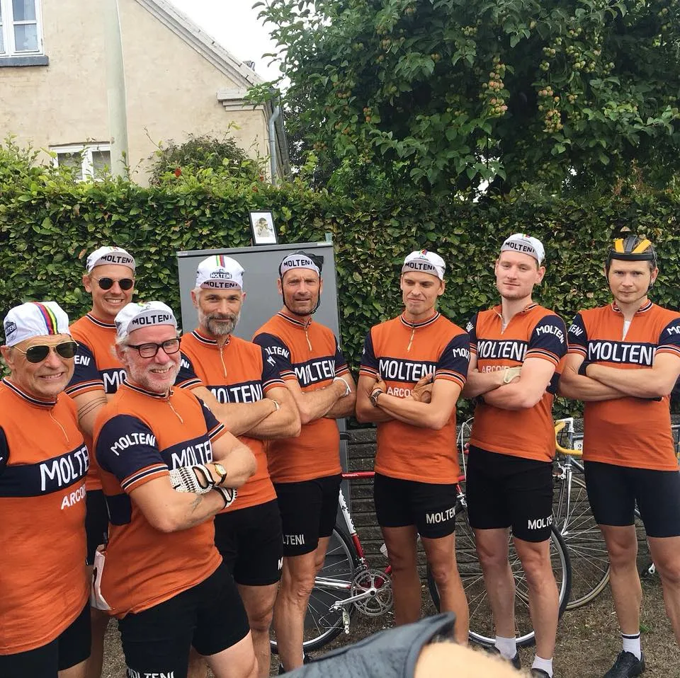

Næsten fuld plade til Molteni ved Kroppedal Grandprix

Efter Molteni-dominans vinder Løjtnant Mark Pedersen Kroppedal Grandprix for tredje år i træk.
Årets Kroppedal Grandprix var i år lavet om til først et social ride på ca 30 km, hvor turen gik til svinget i Ledøje, hvor Fausto Coppi styrtede ved VM i 1956, og efterfølgende et 28 km kriterium på grusveje. Et koncept, der umiddelbart på papiret virkede lidt satset, men viste sig, at blive rigtig godt.
Squadra Molteni stillede til start med 8 ryttere – og planen var klar: løjtnanterne Mark Pedersen og Kasper Sørensen skulle køre Jens Dichie mør på den krævende grusrute.

Allerede efter første omgang var skriften på væggen mere end tydelig: i front lå Mark, Kasper, Niels og Jeppe fra Molteni. Kun Jens Dichie (Christiania) og Jesper Buchtrup (Banani) kunne følge med.


Jens Dichie er yderst velkørende og stærk, men også frustreret over Moltenis overtal. Derfor laver han et kamikaze-angreb efter 2. omgang. Men Moltenis løjtnanter lader sig ikke ryste, og følger efter.
Længere nede i hovedfeltet bakker Grane, Jens, Carsten og stagiaire Rasmus af, så Team Brooklyns bål hær måtte lave alt arbejdet. Men … hvor var de?
– Vi sad konstant og så bagud over skulderen, men Brooklynholdet var ikke at se. Kun Kaptajn Thomas Marker var der, fortæller Grane Maaløe.
Thomas Marker oplyste efter løbet, at han havde sendt de øvrige Brooklynryttere til Copenhagen Pride.
– Jeg har sendt holdet til bøsseparade, og jeg har givet dem godt med Vaseline i cykelbukserne, lød det fra Marker.
På 5. omgang var Jens Dichie kørt så mør som en velhængt krondyrskølle, og fik heldigvis en punktering. Mark og Kasper kunne derefter køre i mål på henholdsvis 1. og 2. pladsen.

I forfølgergruppen måtte Jeppe desværre også døje med en punktering, så kampen om 3. pladens stod nu mellem Kaptajn Bjørnsteen og Jesper Buchtrup. Troede de…

For på næstsidste omgang kom Jack Pedersen (Team DDR) tordnende forbi uden at hilse. Jack kom i mål på 3. pladsen, og det forlyder at Erik Honecker er yderst tilfreds. Bjørnsteen snuppede 4. pladsen foran Jesper Buchtrup.
Grane Maaløe kom ind på en 6. plads – og var eneste rytter der hoppede over jernkæden ved Skovbrynet.
Tak til Henrik Seidenfaden for en godt og gennemført arrangement.